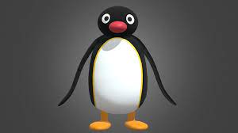
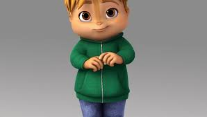
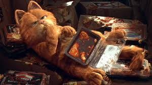

Pingu

Je suis issu d’une série télévisée d’animation qui contenait 156 épisodes de 5 minutes répartis en 6 saisons.
Elle retrace ma vie, de mes parents, de ma sœur Pinga et de mon grand ami Robby le phoque.
Si vous connaissez pas je vous donne le lien de ma chaîne youtube juste ici!
Théodore

Je suis le benjamin des Chipmunks. J’aime manger, cuisiner. Je suis timide, sensible et très joueur mais aussi trop gentil et généreux.
Mon pull est vert et mes yeux aussi. J’ai un faible pour Eléonore et je suis tombé amoureux d’elle.
Ah oui j’ai deux frères Simon c’est le plus intelligent et mature de la bande et Alvin il est un peu égoïste mais il a un bon cœur il est prêt à tout pour nous aider et il ne supporte pas qu’on puisse nous nuire. On a un groupe de musique.

Je suis né dans la cuisine du restaurant italien Mama Leone’s et depuis j’aime un peu beaucoup trop les lasagnes. Je suis paresseux, gourmand, égoïste et j’adore dormir comme tous les chats quoi !
Ce que je préfère c’est embêter mon maître Jon et son chien Odie.
Je m’estime plus intelligent que les humains et les animaux réunis. Je déteste le lundi il m’arrive que des galères ce jour-là.